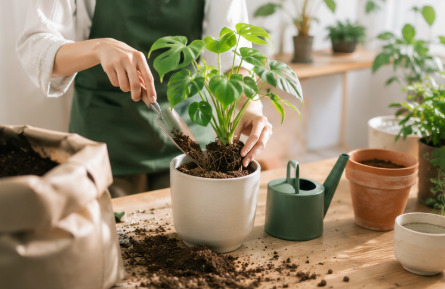

初心者歓迎
知識がなくても大丈夫！基礎から少しずつ学べる環境が整っています。

知識がなくても大丈夫！基礎から少しずつ学べる環境が整っています。
座学だけでなく、実際に植物の植え替えや育成を体験しながら知識を深めます。
少人数で質問しやすく、学年を超えた心地よい交流ができるコミュニティです。
緑に囲まれて癒やされたい人や、自然環境・生き物に興味がある方に最適です。
インテリアとしての植物の飾り方や、空間づくりのコツも一緒に学べます。
マイペースにコツコツ作業するのが好きな人、日常に新しい楽しみが欲しい人にぴったりです。
まずは実際の活動の様子や雰囲気を気軽に見学しに来てください！
見学だけでなく、簡単な土いじりや植え付けの体験参加も大歓迎です。
入会を決めたら、専用のフォームに必要事項を記入して手続き完了です。
A. 大歓迎です！
メンバーの多くが未経験からスタートして楽しんでいます。
A. 週に1〜2回程度を予定しています！
授業やバイトとの両立も無理なく可能です。
A. 可能です！
他のサークルや部活、趣味と自由に掛け持ちしていただけます。